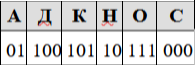

Задание 2. Уметь декодировать кодовую последовательность
1. Валя шифрует русские слова (последовательности букв), записывая вместо каждой буквы её код:
Некоторые цепочки можно расшифровать не одним способом. Например, 00010101 может означать не только СКА, но и СНК. Даны три кодовые цепочки:
100101000
101111100
100111101
Найдите среди них ту, которая имеет только одну расшифровку, и запишите в ответе расшифрованное слово.Решение.
Проанализируем каждый вариант ответа:1) «100101000» может означать как «ДКС» так и «НААС».
2) «101111100» может означать только «КОД».
3) «100111101» может означать как «ДОК» так и «НАОА».
Следовательно, ответ «КОД».
2. Вася и Петя играли в шпионов и кодировали сообщения собственным шифром. Фрагмент кодовой таблицы приведён ниже:

Расшифруйте сообщение, если известно, что буквы в нём не повторяются:
*@@~**~*~ Запишите в ответе расшифрованное сообщение.Решение.
Сопоставляя символы их кодам, расшифруем сообщение: *@@~**~*~ = ЛИМОН.3. Ваня шифрует русские слова, записывая вместо каждой буквы её номер в алфавите (без пробелов). Номера букв даны в таблице:
Некоторые шифровки можно расшифровать несколькими способами. Например, 311333 может означать «ВАЛЯ», может — «ЭЛЯ», а может — «ВААВВВ».
Даны четыре шифровки:
3135420
2102030
1331320
2033510
Только одна из них расшифровывается единственным способом. Найдите её и расшифруйте. Получившееся слово запишите в качестве ответа.Решение.
Проанализируем каждый вариант ответа:1) «3135420» может означать как «ВЛДГТ» так и «ВАВДГТ».
2) «2102030» может означать только «БИТЬ».
3) «1331320» может означать как «ЛЭВТ» так и «АВЭВТ».
4) «2033510» может означать как «ТЯДИ» так и «ТВВДИ».
Следовательно, ответ «БИТЬ».4. Вася и Петя играли в шпионов и кодировали сообщение собственным шифром. Фрагмент кодовой таблицы приведён ниже:
Определите, из скольких букв состоит сообщение, если известно, что буквы в нём не повторяются:
+ ~ + ~ @ ~ +
Решение.
Сопоставляем символы их кодам и получаем ОЛПН, значит в сообщении 4 буквы.Ответ: 4.
5. Вася и Петя играли в шпионов и кодировали сообщение собственным шифром. Фрагмент кодовой таблицы приведён ниже:
Определите, из скольких букв состоит сообщение, если известно, что буквы в нём не повторяются:
# + + ^ # # ^ # ^
Решение.
Сопоставляем символы их кодам и получаем ЛЗИКЙ, значит в сообщении 5 букв.Ответ: 5.